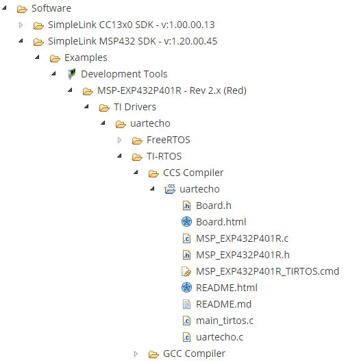
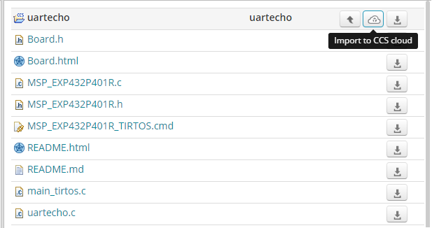
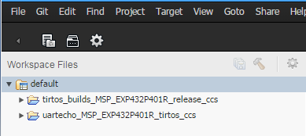
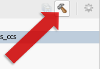
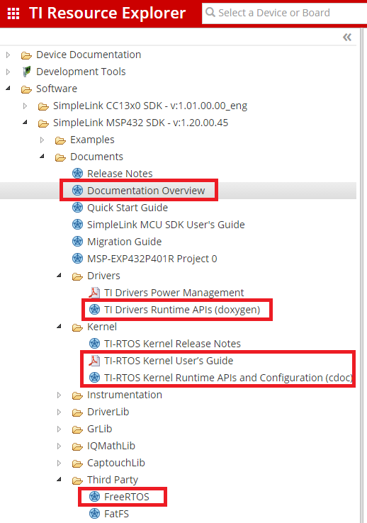

Introduction
POSIX is an IEEE industry API standard for OS compatibility. The SimpleLink™ software development kits (SDKs) has both TI-RTOS and FreeRTOS support. It also offers POSIX support on top of either of these RTOS's. This allows applications to be independent of the underlying RTOS.
This workshop provides a simple introduction to using POSIX with the SimpleLink SDK. You will use TI Resource Explorer, the SimpleLink SDK, and CCS Cloud to modify a project and run it on a SimpleLink LaunchPad™ Development Kit. The goal for this project is to familiarize you with some POSIX APIs and concepts typically used in multithreaded applications.
Here's what we'll learn:
- How POSIX is supported with SimpleLink SDK.
- The basics for creating POSIX threads and controlling their priorities.
- The basics for creating and using POSIX message queues.
Prerequisites
Recommended background reading
- SimpleLink Academy: TI Drivers Project Zero
- SimpleLink Academy: RTOS Concepts
- SimpleLink SDK Quick Start Guide
Software for development
You can follow this tutorial using either of the following:
- Web browser to access TI Resource Explorer and CCS Cloud.
- Desktop/offline tools if you have downloaded and installed the Code Composer Studio (CCS) IDE and the SimpleLink SDK for your LaunchPad.
Hardware requirements
The TI Drivers are compatible across the entire portfolio of SimpleLink MCU devices. So, you can use this workshop with any MSP432, CC32xx, or CC26xx/CC13xx LaunchPad Development Kit.
POSIX Support in SimpleLink SDK
POSIX is not an RTOS. It resides on top of either TI-RTOS or FreeRTOS. As you can see with the following diagram, POSIX hides the underlying RTOS from the application.
The SimpleLink SDK supports the following POSIX sets of APIs.
- Pthread (includes mutexes, barriers, condition variables and read-write locks).
- Semaphores
- Clocks/Timers/sleep
- Message Queue
Please note, not all POSIX APIs are supported in the SimpleLink SDK. For a more details list of the supported APIs and restrictions, please refer to the POSIX Thread (pthread) Support Texas Instruments wiki page.
Setting up the example project
We will begin with a simple example that uses the UART driver to echo back to the console. We'll then extend that example to add an alarmThread. Once the alarmThread is integrated into the example, your typing an 'X' on the UART console will cause a message to be sent to the alarmThread, which then lights an LED. We'll see how to add in several different POSIX APIs to add this capability.
Task 1: Importing "uartecho" with TI Resource Explorer
If you are using CCS Cloud, you may be asked to download and install browser extensions.
Chrome is the recommended browser for developing with CCS Cloud.
Before you start
If you haven't yet gone through the TI Drivers Project Zero workshop, we recommend that you do that first. We'll move quickly through the steps introduced in that workshop here.
Open TI Resource Explorer (either in a web browser or within an installed version of CCS). In the Search box, type "uartecho" and press Enter.
You will see a list of products that include the simple "uartecho" example, which uses the TI Driver for the UART to echo back to the console. Expand the tree for your device family as shown below until you see the "uartecho" example. Notice that examples are provided for both the FreeRTOS and TI-RTOS kernels (for device families where FreeRTOS is supported) and for both the CCS compiler and the GCC compiler.
Under the SimpleLink product for your device family, expand
Examples > Development Tools > [LaunchPad] > TI Drivers > uartecho > TI-RTOS > CCS Compiler > uartechoImport the uartecho example into CCS Cloud by clicking the cloud icon when the project folder is highlighted.
If you have not already opened CCS Cloud, you will be prompted for your myTI account password. Then, the example will be imported. The uartecho and kernel project will both imported.

For installed IDEs
If you'd like to import the example into a traditional offline IDE such as CCS or IAR Workbench, click the Download icon to download the entire SimpleLink SDK, which you can use to import the "uartecho" example project into your IDE.
Task 2. Exploring the uartecho example
As with all TI Driver examples, uartecho is packaged with:
README.html, which you should read to learn how to run the example.Board.html, which shows where hardware resources are located on your board and how they can be accessed in your software (for example, on-board LEDs and pushbuttons).
The example contains a number of .c and .h files, but the files you will be modifying in this workshop are:
main_tirtos.cuartecho.c
For FreeRTOS users
If you chose to import a FreeRTOS version of the example, the file that contains main() is called main_freertos.c instead of main_tirtos.c.
The main_tirtos.c file
First let's take a look at the main_tirtos.c source file -- simply double-click the file to open it in CCS Cloud.
The #include statements and definitions prior to main() are as follows:
#include <stdint.h>
/* POSIX Header files */
#include <pthread.h>
/* RTOS header files */
#include <ti/sysbios/BIOS.h>
/* Example/Board Header files */
#include "Board.h"
extern void *mainThread(void *arg0);
/* Stack size in bytes */
#define THREADSTACKSIZE 1024
main_tirtos.c
<pthread.h>is included so that the POSIX APIs are available.<ti/sysbios/BIOS.h>is included so that the TI-RTOS Kernel is available. TI-RTOS uses a hierarchical module naming convention relative to<SDK_install_dir>\kernel\tirtos\packages, so theBIOS.hfile is located in<SDK_install_dir>\kernel\tirtos\packages\ti\sysbios."Board.h"is located in the uartecho project. It maps device-specific constants for accessing peripherals to device-independent constants used in the examples. For example, it mapsBoard_GPIO_LED0toCC3220S_LAUNCHXL_GPIO_LED_D7for the CC3220S.mainThread()is the function defined inuartecho.c, which is run by a thread created in main().THREADSTACKSIZEspecifies the size of the stack (in bytes) that is allocated for the mainThread.
For FreeRTOS users
The <FreeRTOS.h> and <task.h> headers would be included instead of <ti/sysbios/BIOS.h>.
Now, let's look at the contents of the main() function. This is where we begin to see POSIX APIs. Details about using POSIX threads with the TI-RTOS Kernel and FreeRTOS through the SimpleLink SDK are provided in the POSIX Thread (pthread) Support. For more detail, see the official specification and documentation of the generic implementation.
int main(void)
{
pthread_t thread;
pthread_attr_t attrs;
struct sched_param priParam;
int retc;
int detachState;
/* Call driver init functions */
Board_initGeneral();
/* Set priority and stack size attributes */
pthread_attr_init(&attrs);
priParam.sched_priority = 1;
detachState = PTHREAD_CREATE_DETACHED;
retc = pthread_attr_setdetachstate(&attrs, detachState);
if (retc != 0) {
/* pthread_attr_setdetachstate() failed */
while (1);
}
pthread_attr_setschedparam(&attrs, &priParam);
retc |= pthread_attr_setstacksize(&attrs, THREADSTACKSIZE);
if (retc != 0) {
/* pthread_attr_setstacksize() failed */
while (1);
}
retc = pthread_create(&thread, &attrs, mainThread, NULL);
if (retc != 0) {
/* pthread_create() failed */
while (1);
}
BIOS_start();
return (0);
}
main_tirtos.c
In general, the main() function does the following:
Board_initGeneral()initializes the board. The"Board.h"file maps this device-independent function to a device-specific function. The device-specific function is defined in a device-specific file that is part of your project.For example,
CC2640R2_LAUNCHXL.ccontains theCC2640R2_LAUNCHXL_initGeneral()function, which initializes the Power Manager and verifies that pins can be accessed. You can add board startup steps to this function if necessary.- The
main()function then sets attributes for and creates a POSIX thread. The process of creating a thread is described in more detail below. BIOS_start()runs the TI-RTOS Kernel. That is, it causes the kernel's scheduler to take over, and threads that have been created run according to the rules of the scheduler. If this were a FreeRTOS version of the same example, thevTaskStartScheduler()function would be run instead.- The
BIOS_start()function never returns, butreturn(0)is included for completeness.
See how the POSIX thread was created
The pthread_attr_init() function initializes the pthread_attr_t object pointed to by attrs. Its fields are set to their default values.
The priParam.sched_priority field is set to 1. This is the lowest thread priority.
The pthread_attr_setdetachstate() function sets the state of the thread to be created as PTHREAD_CREATE_DETACH, because you won't be calling pthread_detach() and pthread_join() to pause and resume execution of this thread.
The pthread_attr_setstacksize() function sets the size of the stack (in bytes) that will be allocated for the mainThread.
Once all these attributes have been set, the pthread_create() function creates the thread. The thread uses the attrs set of attributes and the mainThread will be the function run by the thread. If you wanted to pass information to the thread function, you could pass something other than NULL as the final function argument. The ID of a successfully created thread is stored in thread.
Corresponding TI-RTOS Kernel code
In TI-RTOS Kernel terms, this example creates a Task object, whose function runs at a higher priority than the Idle thread. If you were constructing this Task with TI-RTOS Kernel APIs instead of POSIX, the code could look like this:
/* Construct BIOS Task */
Task_Struct task0Struct;
Char task0Stack[THREADSTACKSIZE];
...
Task_Params taskParams;
Task_Params_init(&taskParams);
taskParams.priority = 1;
taskParams.stackSize = THREADSTACKSIZE;
taskParams.stack = &task0Stack;
taskParams.instance->name = "echo";
Task_construct(&task0Struct, (Task_FuncPtr)mainThread, &taskParams, NULL);
TI-RTOS way to create a thread (aka Task)
The above code also provides the stack to minimize memory allocation.
The uartecho.c file
Now let's look at the uartecho.c file, which contains the mainThread() function, which is run by the thread created in main().
The thread function performs the following actions before dropping into a loop where the UART is echoed continuously.
- Initializes the GPIO driver.
- Initializes the UART driver.
- Turns on the board's LED by writing to the GPIO driver.
- Creates a UART object that will send characters to a serial session connected to a COM port (See
README.htmlfor more details). - Opens the UART object.
- Writes "Echoing characters:" to the UART object.
Once in the while loop, the function:
- Reads a single character from the UART object (the serial session)
Writes a single character back to the UART object.
void *mainThread(void *arg0) { char input; const char echoPrompt[] = "Echoing characters:\r\n"; UART_Handle uart; UART_Params uartParams; /* Call driver init functions */ GPIO_init(); UART_init(); /* Turn on user LED */ GPIO_write(Board_GPIO_LED0, Board_GPIO_LED_ON); /* Create a UART with data processing off. */ UART_Params_init(&uartParams); uartParams.writeDataMode = UART_DATA_BINARY; uartParams.readDataMode = UART_DATA_BINARY; uartParams.readReturnMode = UART_RETURN_FULL; uartParams.readEcho = UART_ECHO_OFF; uartParams.baudRate = 115200; uart = UART_open(Board_UART0, &uartParams); if (uart == NULL) { /* UART_open() failed */ while (1); } UART_write(uart, echoPrompt, sizeof(echoPrompt)); /* Loop forever echoing */ while (1) { UART_read(uart, &input, 1); UART_write(uart, &input, 1); } }uartecho.c
Task 3: Building and testing uartecho
Before we begin modifying the example, let's test it to verify that it runs.
To build your project in CCS Cloud, simply click the hammer icon. This compiles your code in the cloud and provides a .out file, which you can flash into your device. Alternatively, you can click the Debug icon, which compiles your code and flashes your hardware. It will also jump you into a debug session, where you can step through your code, set breakpoints and watch variables.
To program your LaunchPad, click the "Run" button in CCS Cloud. This builds your project and flashes your hardware with the newly compiled image.

See the
README.htmlandBoard.htmlfiles in your project for instructions about running the uartecho example.
Extending your code example
Now we can extend the example to turn on an LED when you type an 'X' on the UART console.
To send an alarm message, we'll use a POSIX message queue with a new POSIX thread called alarmThread. In response to a message on the message queue, this alarmThread will cause an LED on the board to light up.
So, to summarize the changes we'll need to make:
main()needs to open a POSIX message queue that will be used to send messages between threads.main()needs to create a POSIX thread to receive and respond to the messages that will be sent. We'll set this to a higher priority so that the alarm will be serviced quickly. The thread to service the alarm will have a function calledalarmThread().mainThread()needs to check the input character received from theUART_read(). If it is an 'X', it should send a message on the message queue. Otherwise, it should echo the character typed to the UART as usual.- A new function called
alarmThread()needs to be created to service the alarm. We'll put this in a separate file calledalarm.c.
Communication between threads
Other POSIX tools for synchronizing thread access to shared resources include mutexes, barriers, condition variables, read-write locks, semaphores, and timers.
Remember that details about using POSIX threads with the TI-RTOS Kernel and FreeRTOS through the SimpleLink SDK are provided in the POSIX Thread (pthread) Support. For more detail, see the official specification and documentation of the generic implementation.
Task 4: Opening a POSIX message queue
POSIX message queues support communication between threads. To enable use of message queues and threads, the file needs to include the header file for POSIX message queues, which is mqueue.h. In addition, the GPIO driver needs to be initialized so that we can make sure the LED is off when the message queue is opened.
- We'll add code to
main_tirtos.cto open the POSIX message queue. Open that file (ormain_freertos.c) for editing. Add the following statements to the list of #includes before
main():#include <mqueue.h> #include <ti/drivers/GPIO.h>main_tirtos.c
Some constants and a global variable are needed in order to use the message queue. Add these statements just before the beginning of
main():#define MSG_SIZE sizeof(int) #define MSG_NUM 4 mqd_t mqdes;main_tirtos.c
The
mqdesvariable will receive the message queue descriptor used to access the message queue by the threads. Note: we have this as a global variable to make sure the memory stays persistent.Add the following declaration to the declarations within
main(). ThemqAttrsstructure allows you to specify message queue flags, the maximum number of messages, and the message size for the message queue.struct mq_attr mqAttrs;main_tirtos.c
Add the following code after the call to
Board_initGeneral():GPIO_init(); GPIO_write(Board_GPIO_LED0, Board_GPIO_LED_OFF); mqAttrs.mq_maxmsg = MSG_NUM; mqAttrs.mq_msgsize = MSG_SIZE; mqAttrs.mq_flags = 0; mqdes = mq_open ("alarm", O_RDWR | O_CREAT, 0664, &mqAttrs); if (mqdes == (mqd_t)-1) { /* mq_open() failed */ while (1); }main_tirtos.c
This code performs the following:
- Initializes the GPIO driver. Previously, this was done in
mainThread(), so we will need to remove it from there. - Writes to the GPIO driver to turn off the board's LED (just in case).
- Sets values for the files in the
mqAttrsstructure that will be used when creating the message queue. - Calls
mq_open()to create and open the message queue. The queue will be named "alarm", created using the provided structure of typemq_attr(O_CREAT), and opened for both receiving and sending messages (O_RDWR). The octal value 0664 provides a required mode argument to the O_CREAT flag. (0664 indicates the user and group can read and write, while all others can only read.) - Verifies that the message queue was created successfully. If not, it loops forever.
- Initializes the GPIO driver. Previously, this was done in
Corresponding TI-RTOS Kernel code
In TI-RTOS Kernel terms, the POSIX message queue is implemented using the Mailbox module.
Task 5: Creating a POSIX thread to handle the message
Next, main() needs to create a POSIX thread to receive and respond to the messages that will be sent.
After the declaration of the
mainThread()external function, add the following declaration of thealarmThread()external function that will service the alarm.extern void *alarmThread(void *arg0);main_tirtos.c
Add the following declaration to the declarations within
main(). The "alarm" variable will be used when creating the new thread.pthread_t alarm;main_tirtos.c
Right before the statement that calls
BIOS_start(), add the following statements to create another POSIX thread. This thread will have a higher priority so that the alarm can be serviced ahead of echoing other characters that have been typed. A higher number indicates a higher priority. Note: we are using the fact that attrs has already been initializated, so we can just change the desired field./* * Make the alarm thread a higher priority. */ priParam.sched_priority = 2; pthread_attr_setschedparam(&attrs, &priParam); retc = pthread_create(&alarm, &attrs, alarmThread, (void *)&mqdes); if (retc != 0) { /* pthread_create() failed */ while (1); }main_tirtos.c
Notice that the call to
pthread_create()passes the message queue descriptormqdesto the thread. This allows the thread to access the message queue.The existing
mainThread()will also need to access the message queue. So, modify the first call topthread_create()to the following (change theNULLto(void *)&mqdes):retc = pthread_create(&thread, &attrs, mainThread, (void *)&mqdes);main_tirtos.c
Save the
main_tirtos.cfile.Here is the full source for
main_tirtos.cif you want to confirm (or copy)/* * ======== main_tirtos.c ======== */ #include <stdint.h> /* POSIX Header files */ #include <pthread.h> #include <mqueue.h> #include <ti/drivers/GPIO.h> /* RTOS header files */ #include <ti/sysbios/BIOS.h> /* Example/Board Header files */ #include "Board.h" extern void *mainThread(void *arg0); extern void *alarmThread(void *arg0); /* Stack size in bytes */ #define THREADSTACKSIZE 1024 #define MSG_SIZE sizeof(int) #define MSG_NUM 4 mqd_t mqdes; /* * ======== main ======== */ int main(void) { pthread_t thread; pthread_t alarm; pthread_attr_t attrs; struct sched_param priParam; int retc; int detachState; struct mq_attr mqAttrs; /* Call driver init functions */ Board_initGeneral(); GPIO_init(); GPIO_write(Board_GPIO_LED0, Board_GPIO_LED_OFF); mqAttrs.mq_maxmsg = MSG_NUM; mqAttrs.mq_msgsize = MSG_SIZE; mqAttrs.mq_flags = 0; mqdes = mq_open ("alarm", O_RDWR | O_CREAT, 0664, &mqAttrs); if (mqdes == (mqd_t)-1) { /* mq_open() failed */ while (1); } /* Set priority and stack size attributes */ pthread_attr_init(&attrs); priParam.sched_priority = 1; detachState = PTHREAD_CREATE_DETACHED; retc = pthread_attr_setdetachstate(&attrs, detachState); if (retc != 0) { /* pthread_attr_setdetachstate() failed */ while (1); } pthread_attr_setschedparam(&attrs, &priParam); retc |= pthread_attr_setstacksize(&attrs, THREADSTACKSIZE); if (retc != 0) { /* pthread_attr_setstacksize() failed */ while (1); } retc = pthread_create(&thread, &attrs, mainThread, (void *)&mqdes); if (retc != 0) { /* pthread_create() failed */ while (1); } /* * Make the alarm thread a higher priority. */ priParam.sched_priority = 2; pthread_attr_setschedparam(&attrs, &priParam); retc = pthread_create(&alarm, &attrs, alarmThread, (void *)&mqdes); if (retc != 0) { /* pthread_create() failed */ while (1); } BIOS_start(); return (0); }main_tirtos.c
Task 6: Sending a POSIX message
The mainThread() function needs to check the input character received from the UART_read(). If it is an 'X', it should send a message on the message queue. Then it will echo the character typed to the UART as usual.
- Open the
uartecho.cfile from your CCS project. Since
mainThread()will need to callmq_send(), add the following statement to the list of #include files so that the POSIX module is available.#include <mqueue.h>uartecho.c
In addition, add the following declarations to the declarations at the start of
mainThread().mqd_t *mqdes = arg0; int msg;uartecho.c
Recall that you moved the initialization and first call to the GPIO driver to
main(). Delete (or comment out) the following lines fromuartecho.c.//GPIO_init(); /* Turn on user LED */ //GPIO_write(Board_GPIO_LED0, Board_GPIO_LED_ON);uartecho.c
Finally, add the following statements between the calls to
UART_read()andUART_write().if (input == 'X') { msg = 5; mq_send(*mqdes , (char *)&msg, sizeof(msg), 0); }uartecho.c
If an 'X' was typed,
mq_send()sends the integer 5 as the message. This value is arbitrary and will not be used by thealarmThread(). However, you could further modify the example to take different actions based on the value of the message passed.Save the
uartecho.cfile.Here is the full source for
uartecho.cif you want to confirm (or copy)/* * ======== uartecho.c ======== */ #include <stdint.h> #include <stddef.h> #include <mqueue.h> /* Driver Header files */ #include <ti/drivers/GPIO.h> #include <ti/drivers/UART.h> /* Example/Board Header files */ #include "Board.h" /* * ======== mainThread ======== */ void *mainThread(void *arg0) { char input; const char echoPrompt[] = "Echoing characters:\r\n"; UART_Handle uart; UART_Params uartParams; mqd_t *mqdes = arg0; int msg; /* Call driver init functions */ UART_init(); /* Create a UART with data processing off. */ UART_Params_init(&uartParams); uartParams.writeDataMode = UART_DATA_BINARY; uartParams.readDataMode = UART_DATA_BINARY; uartParams.readReturnMode = UART_RETURN_FULL; uartParams.readEcho = UART_ECHO_OFF; uartParams.baudRate = 115200; uart = UART_open(Board_UART0, &uartParams); if (uart == NULL) { /* UART_open() failed */ while (1); } UART_write(uart, echoPrompt, sizeof(echoPrompt)); /* Loop forever echoing */ while (1) { UART_read(uart, &input, 1); if (input == 'X') { msg = 5; mq_send(*mqdes , (char *)&msg, sizeof(msg), 0); } UART_write(uart, &input, 1); } }uartecho.c
Task 7: Creating a thread function to receiving the POSIX message
Now we'll create the function to be run by the alarm thread. This function can be placed in a new file called alarm.c.
- In CCS, choose File > New File.
Paste the following code into the new file, and save the file as
alarm.cin your CCS project./* * ======== alarm.c ======== */ #include <pthread.h> #include <mqueue.h> /* Driver Header files */ #include <ti/drivers/GPIO.h> /* Board Header file */ #include "Board.h" /* * ======== alarmThread ======== */ void *alarmThread(void *arg0) { mqd_t *mqdes = arg0; int msg; while (mq_receive(*mqdes, (char *)&msg, sizeof(msg), NULL) != -1) { /* Turn on user LED */ GPIO_write(Board_GPIO_LED0, Board_GPIO_LED_ON); } return(0); }alarm.c
The call to
mq_receive()gets the message from the queue. If the message is received successfully, it callsGPIO_write()to turn on the board's LED.
Task 8: Run the modified program
- Build and run the program you have modified. In the console, type some characters other than 'X' and then type 'X'. Watch the LED on the board.
- If you encounter problems, debug the code as necessary and compare your code to the listings above.
Quiz
Let's see if you picked up some key points...
You have to use POSIX APIs to use TI Drivers?
What TI-RTOS module is used underneath the POSIX message queues
Great! Now what?
You can extend the modified example in several ways. For example, you might want to pass a different message value to turn off the LED. Or, you could add a POSIX timer to turn off the LED after several seconds.
Remember that details about using POSIX threads with the TI-RTOS Kernel and FreeRTOS through the SimpleLink SDK are provided in the TI Processors wiki. For more detail, see the official specification and documentation of the generic implementation.
Also the TI Resource Explorer provides extensive documentation for TI Drivers, the TI-RTOS Kernel, and more. Documentation that may be especially helpful after you have completed this workshop is highlighted below.

This work is licensed under a Creative Commons Attribution-NonCommercial-NoDerivatives 4.0 International License.